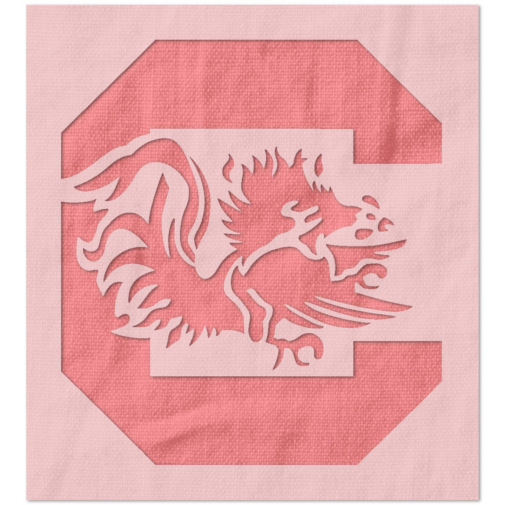
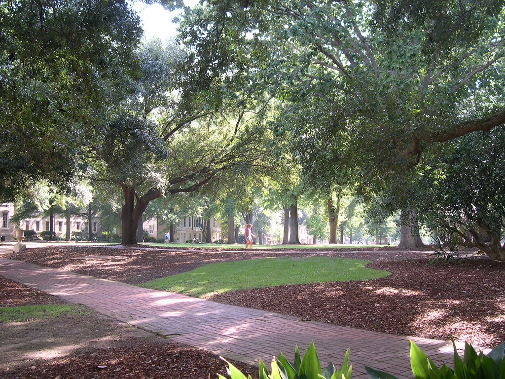
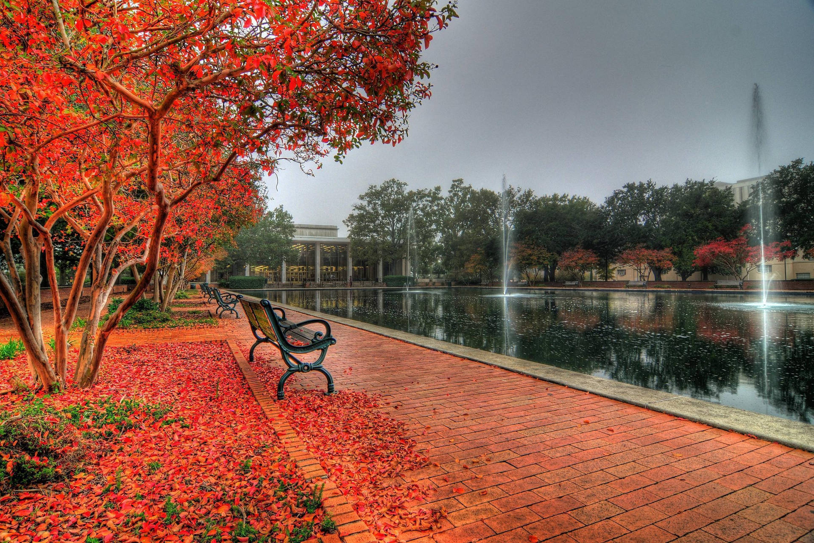
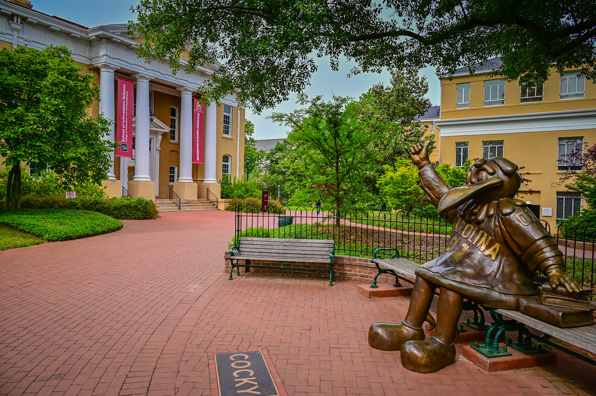

Hey there!

Now that I've been at USC for over a year, I figured I'd show you some of the university.
The image to the left is the USC logo. Mouse over the image for a surpise!

This is the horseshoe, the oldest part of campus. There's dorms, academic buildings, benches, and lots of trees.
People will sit in the grass to relax, do homework, or hang out. When it's warm, it gets pretty busy.

This is another popular spot on campus: the fountain in front of the library. Especially in the fall, this area is beautiful.
When it's nice out, I will often sit on a beach next to the fountain and either read or do homework.

Our final stop: the cocky statue. There's always either a new student or a graduating student taking a picture here.
That's it for the USC tour. I hope you're doing well!